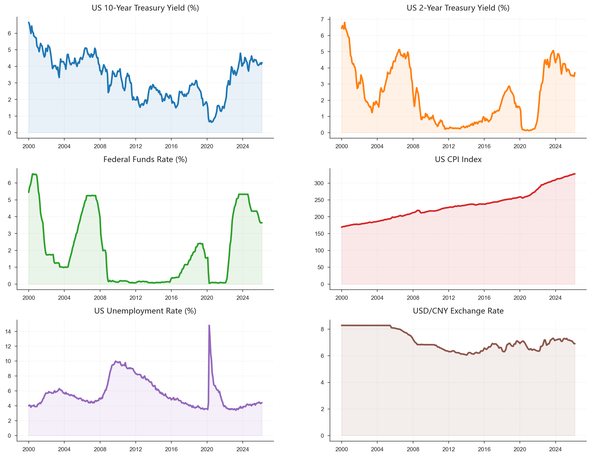
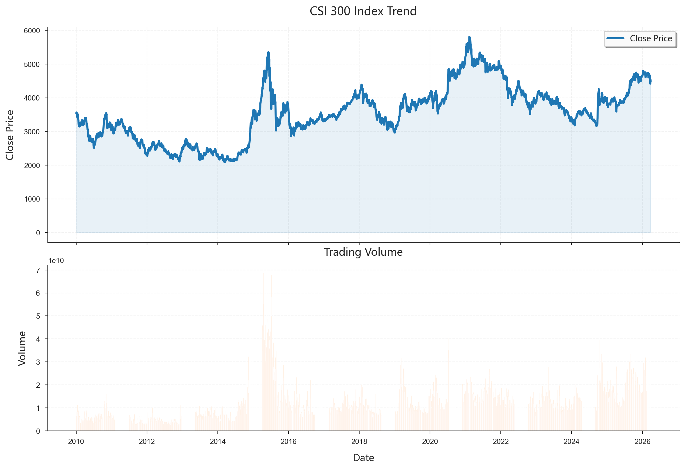
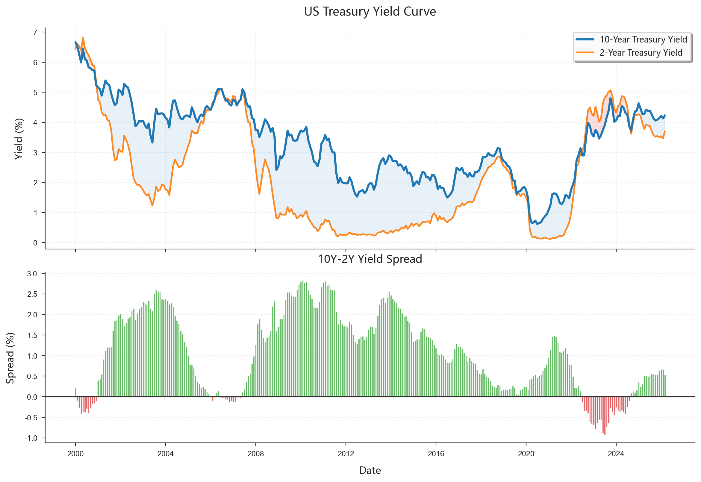
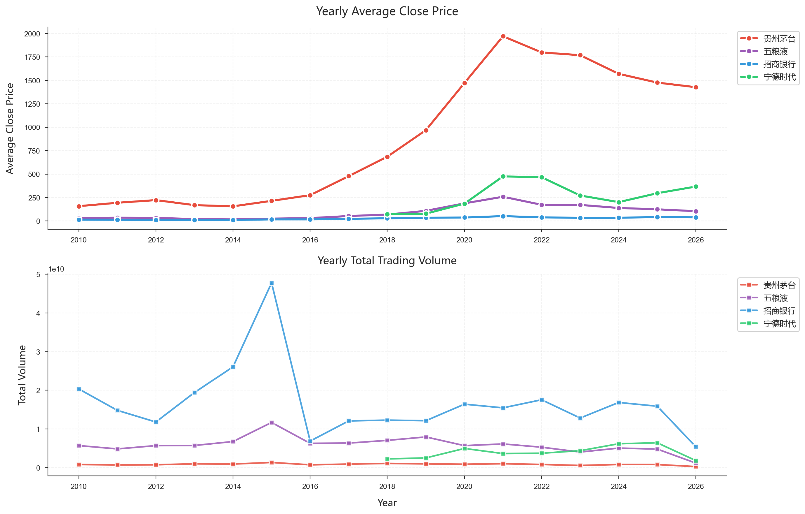
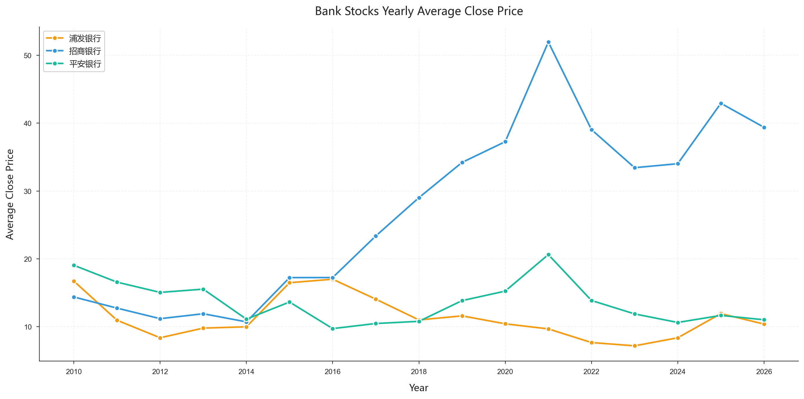
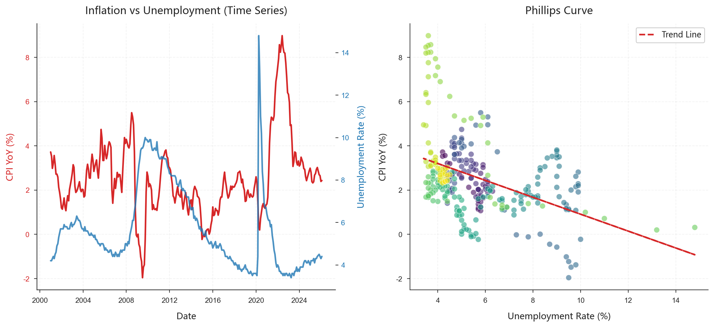
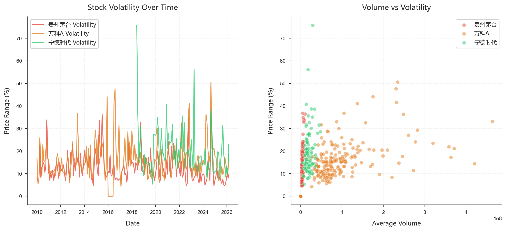
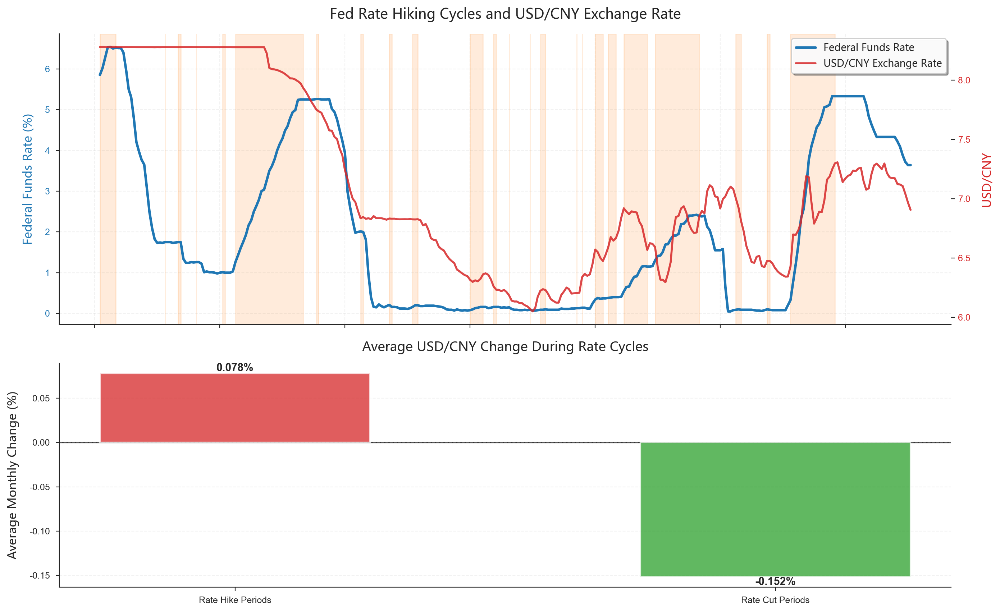

代码块阴影示例
2.1 项目整体流程
本项目的分析工作分为三个主要阶段：
- 数据获取阶段：通过 API 获取原始数据
- 数据库建立阶段：设计并创建 SQLite 数据库
- 分析与可视化阶段：使用 SQL 查询进行数据分析
2.2 数据来源
2.2.1 FRED 宏观经济数据
从 St. Louis Fed 的 FRED (Federal Reserve Economic Data) API 获取以下数据：
| 序列 ID | 指标名称 | 时间范围 |
|---|---|---|
| CPIAUCSL | 消费者价格指数 | 2000-01-01 至 2024-12-31 |
| UNRATE | 失业率 | 2000-01-01 至 2024-12-31 |
| FEDFUNDS | 联邦基金利率 | 2000-01-01 至 2024-12-31 |
| GS10 | 10 年期国债收益率 | 2000-01-01 至 2024-12-31 |
| GS2 | 2 年期国债收益率 | 2000-01-01 至 2024-12-31 |
| DEXCHUS | 美元兑人民币汇率 | 2000-01-01 至 2024-12-31 |

2.2.2 A 股市场数据
使用 baostock API 获取以下数据：
- 沪深 300 指数（000300.SH）
- 10 只代表性股票：包括招商银行、平安银行、贵州茅台、恒瑞医药等不同行业的龙头企业
数据范围：2020-01-01 至 2024-12-31

2.3 数据库概览
创建的 fin_data.db 数据库包含三个核心表：
| 表名 | 记录数 | 说明 |
|---|---|---|
macro_data |
1,887 | 宏观经济数据 |
stock_price |
41,194 | 股票行情数据 |
stock_info |
11 | 股票基本信息 |
2.4 主要分析内容与结论
2.4.1 收益率曲线利差分析
分析目标：计算 10 年期与 2 年期国债收益率的利差（10Y-2Y），这是预测经济衰退的重要指标。
SQL 查询方法：使用 CASE WHEN 语句将长表转为宽表，然后计算利差。
SELECT
date,
MAX(CASE WHEN series_id = 'GS10' THEN value END) AS gs10,
MAX(CASE WHEN series_id = 'GS2' THEN value END) AS gs2,
MAX(CASE WHEN series_id = 'GS10' THEN value END) -
MAX(CASE WHEN series_id = 'GS2' THEN value END) AS yield_spread
FROM macro_data
WHERE series_id IN ('GS10', 'GS2')
GROUP BY date
ORDER BY date;
主要发现： - 收益率曲线利差在经济危机期间（如 2008 年、2020 年）出现剧烈波动 - 利差收窄甚至倒挂往往预示着经济下行压力增大
2.4.2 股票年度统计分析
分析目标：计算每只股票的年度平均收盘价和总成交量，观察长期趋势。
SQL 查询方法：使用 substr() 提取年份，配合 GROUP BY 进行聚合。
SELECT
code,
substr(date, 1, 4) AS year,
AVG(close) AS avg_close,
SUM(volume) AS total_volume
FROM stock_price
GROUP BY code, year
ORDER BY code, year;
主要发现： - 不同股票的年度表现差异显著 - 成交量与股价波动存在一定相关性 - 银行股表现相对稳健，消费股波动较大
2.4.3 银行股筛选分析
分析目标：筛选出银行行业且上市超过 10 年的股票。
SQL 查询方法：多条件筛选，使用 DATE() 函数计算上市年限。
SELECT
si.code,
si.name,
si.industry,
si.list_date,
DATE('now') - DATE(si.list_date) AS years_listed
FROM stock_info si
WHERE
si.industry = '银行'
AND DATE('now') - DATE(si.list_date) >= 10
ORDER BY si.list_date;
筛选结果： 1. 浦发银行 2. 招商银行 3. 平安银行
2.4.4 菲利普斯曲线验证
分析目标：探索 CPI（通胀率）与失业率之间的关系，验证菲利普斯曲线理论。
SQL 查询方法：将 CPI 和失业率数据进行联结，然后分析相关性。

主要发现： - 短期来看，通胀与失业率确实存在一定的替代关系 - 但长期来看，这种关系并不稳定，受多种因素影响
2.4.5 股票波动率与成交量关系
分析目标：分析股票价格波动率与成交量之间的关系。
SQL 查询方法：计算每日价格振幅（(high-low)/close）作为波动率指标，然后与成交量对比。

主要发现： - 高成交量往往伴随着高波动率 - 在市场剧烈波动时期，成交量显著放大
2.4.6 美联储政策对人民币汇率的影响（完整分析流程）
分析目标：研究美联储加息/降息周期对美元兑人民币汇率的影响。
分析步骤： 1. 识别美联储的加息和降息周期 2. 计算不同周期内的汇率月度变动 3. 对比分析差异

主要结论：
| 政策周期 | 平均月度汇率变动 |
|---|---|
| 加息期间 | +0.0779% |
| 降息期间 | -0.1517% |
解读： - 美联储加息期间，美元趋于走强，人民币相对贬值（汇率上升） - 美联储降息期间，美元趋于走弱，人民币相对升值（汇率下降） - 这一结果符合利率平价理论的预期
2.5 本章小结
本项目通过 API 获取了丰富的金融市场数据，建立了结构化的 SQLite 数据库，并完成了多个维度的分析。主要收获包括：
- 数据获取能力：掌握了使用 API 获取经济金融数据的方法
- 数据库管理能力：学会了设计和管理关系型数据库
- 分析能力：能够运用 SQL 进行复杂的数据查询和分析
- 可视化能力：通过图表直观展示分析结果
下一章将详细介绍本项目中使用的 SQLite 技术。